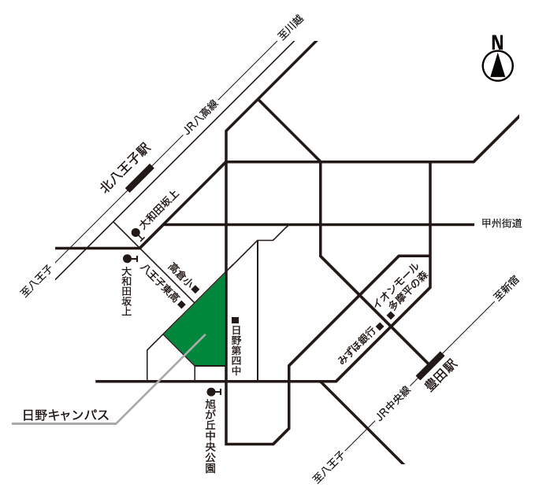

アクセス
日野キャンパス*
〒191-0065 東京都日野市旭が丘6-6
Tel 042-585-8606
- ＪＲ中央線「豊田」駅（北口）から徒歩約20分。
または京王バス「平山工業団地循環」乗車、
「旭が丘中央公園」下車徒歩約5分 - ＪＲ中央線「八王子」駅（北口）、京王線「京王八王子」駅（西口）から
京王バス「日野駅行き」または「豊田駅北口行き」乗車、
「大和田坂上」下車徒歩約10分 - ＪＲ八高線「北八王子」駅から徒歩約15分
*学部1・2年次は南大沢キャンパス
 Google Mapsで見る